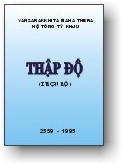

BuddhaSasana
Home Page
This document is written in Vietnamese, with Unicode
Times font
|  |
Theravàda THẬP ÐỘVANSARAKKHITA
MAHA THERA
|
KINH ẤN TỐNG Do Chư Tăng, Tu nữ cùng Phật tử Phật giáo Nguyên Thuỷ (THERAVÀDA) trong nước và nước ngoài phát tâm cúng dường dâng lễ giỗ thứ 14 (1990) của CỐ ÐẠI LÃO HOÀ THƯỢNG HỘ TÔNG - VANSARAKKHITA MAHATHERA (1893 - 1981), BẬC KHAI SÁNG PHẬT GIÁO NGUYÊN THUỶ VIỆT NAM Thập độ là chính đạo yếu điểm của đức Thế Tôn mà hành học Phật cần phải hiểu biết cho tinh tường là điều quan trọng nhất. Chúng ta người mong được thành Phật, phải học và hành pháp Ba la mật là giáo pháp chính thức của đức Phật, mà người sẽ thành Phật trước tiên, phải tu hạnh Bồ Tát, hành pháp Ba la mật. Bồ Tát có nghĩa là bậc sẽ giác ngộ pháp tối cao, không cho sanh già bịnh chết, thoát ly thống khổ luân hồi. Hơn nữa sự thông hiểu cổ tích Bồ Tát là một phương pháp phát sanh trí tuệ, đem đến nhiều hạnh phúc và cho ta trở nên bậc thượng lưu quân tử (trước khi chưa thành Phật), vì Bồ Tát có đủ tài đức đặc biệt phi thường. Mong chư vị Phật tử nhận được và thấu rõ pháp Thập độ cứu cánh giải thoát, chúng tôi không nệ tài hèn , học kém, tìm phiên dịch 10 tích Bồ Tát (các tiền kiếp của Ðức Bổn Sư Thích Ca Mâu Ni) tu đầy đủ phạm hạnh Ba la mật. Trong mỗi chuyện đều có nêu gương chí thiện của Bồ Tát. Chúng tôi, chỉ hy vọng cho tất cả muôn loài được lãnh hội chánh pháp, ngõ hầu mau đạt đến Niết Bàn vô sinh bất diệt. Mong thay! Nhận thấy Thập độ là một yếu tố căn bản mà người tu Phật phải thông hiểu và tinh tấn thực hành theo. Ðức Thế Tôn khi còn là vị Bồ Tát, Ngài cố gắng tu pháp Ba la mật đã trải qua bao nhiêu A tăng kỳ kiếp, nên chi Ngài mới chứng quả siêu thoát Niết Bàn. Mong cho chư Phật tử được tế nhận rõ rệt đường lối cứu cánh của đức Chánh Biết Tri, chúng tôi không nệ tài hèn đức kém, tìm phiên dịch nối tiếp năm pháp Ba la mật sau đây (các tiền kiếp của Ðức Bổn Sư Thích Ca Mâu Ni) trong mỗi chuyện đều có nêu rõ gương chí thiện của đức Bồ Tát. Những phương pháp đã diễn giải toàn là những lợi ích tối cao, vì chúng ta không quan tâm đến nó, nên không nhận thức được sự tinh túy ngõ hầu tìm ra ánh sáng để thoát ly trần tục. Chúng tôi mong tất cả muôn loài lãnh hội chánh pháp, nên trọn ấy con đường chơn chánh để tiến hành, như thế mới mong đem mình ra khỏi bể trầm luân, không sợ bị thế gian pháp đầu độc trước cái đẹp ảo huyền của vật chất. Chỉ có một tinh thần sáng suốt trên phương diện giải thoát đạt đến Niết Bàn là pháp vô sanh bất diệt Mong thay! -ooOoo- Ðầu trang | 01 | 02 | 03 | 04 | 05 | 06 | 07 | 08 | 09 | 10 | 11 | 12 | Mục lục |
Chân thành cám ơn anh NTH đã giúp đánh máy vi tính -- Bình Anson, tháng 6-2001
update: 10-06-2001